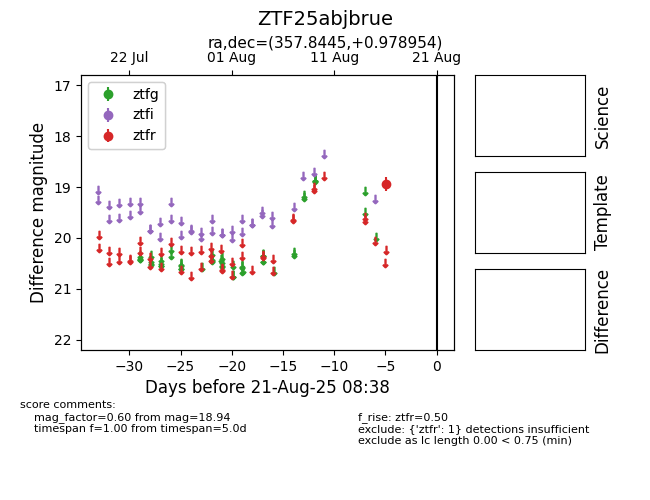

Target ZTF25abjbrue at 2025-08-21 08:38, see:
FINK: fink-portal.org/ZTF25abjbrue
Lasair: lasair-ztf.lsst.ac.uk/objects/ZTF25abjbrue
ALeRCE: alerce.online/object/ZTF25abjbrue
alt names
ZTF25abjbrue (ztf,alerce)
coordinates:
equatorial (ra, dec) = (357.8445,+0.97895)
galactic (l, b) = (93.3089,-58.39553)
photometry
last ztfr=18.94
1 ztfr detections
